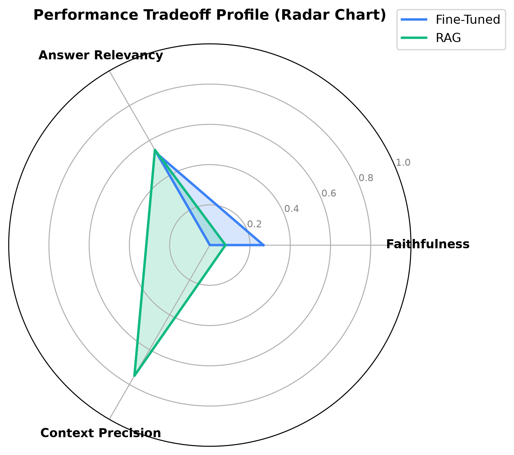
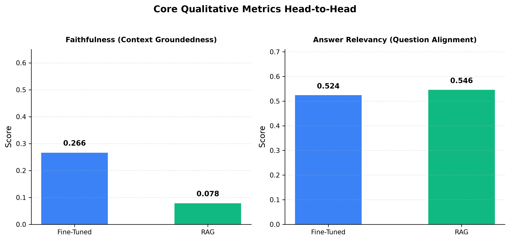
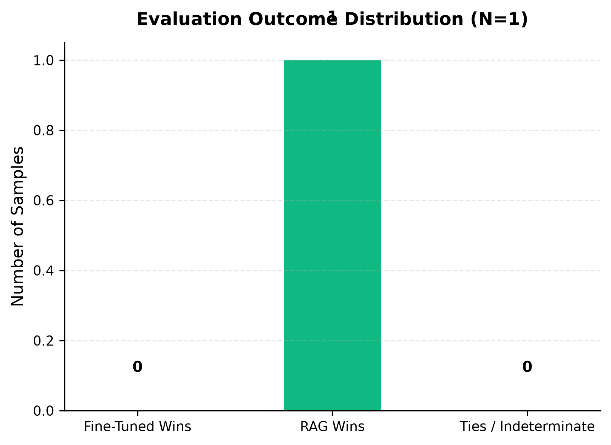

Executive Summary: Head-to-head empirical comparison of QLoRA domain fine-tuning against LangChain + FAISS retrieval-augmented generation on the MedQuAD corpus.
Aggregate Scores
Metric
Fine-Tuned (QLoRA)
RAG (FAISS)
Higher Score
Faithfulness
0.266
0.078
Fine-Tuned
Answer Relevancy
0.524
0.546
RAG
Context Precision
—
0.750
—
Benchmark Visualizations
Aggregate Metric Comparison
Metric Tradeoff Profile (Radar)

Core Qualitative Metrics

Inference Latency Comparison
Per-Sample Score Divergence
Evaluation Outcome Distribution

Methodological Notes
Faithfulness: Assesses factual groundedness against reference contexts to detect hallucination.
Answer Relevancy: Measures alignment with the clinical intent of the question.
Context Precision: Measures retrieval quality (applicable to the RAG pipeline).
Figures: High-resolution PNG and publication-grade vector PDF figures are available in evaluation/results/visualizations/.